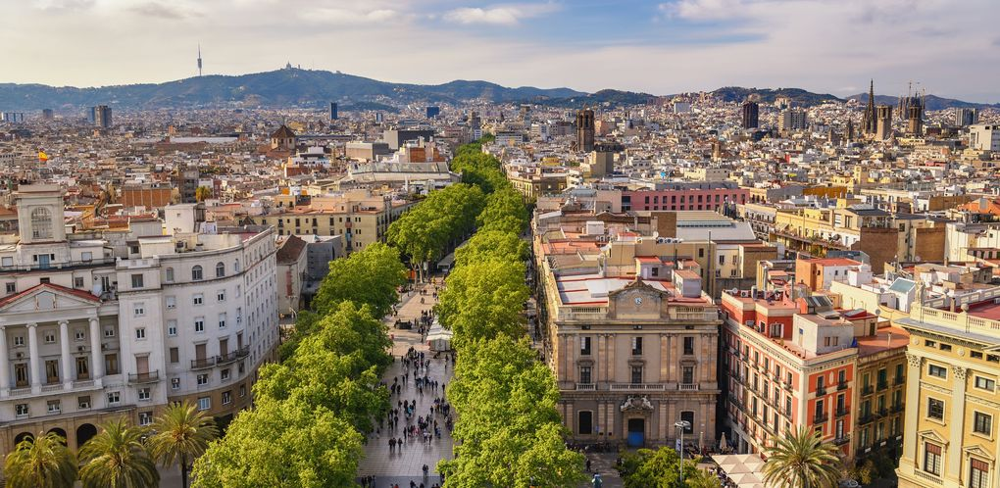

Viagens Populares para sua Próxima aventura
Barcelona - Espanha

Barcelona combina arte, arquitetura e vida vibrante à beira-mar, com arquitetura icônica e uma atmosfera descontraída.
Paris - França

Paris, a Cidade Luz, é sinônimo de romance, cultura e elegância, com marcos como a Torre Eiffel e museus mundialmente famosos.
Okinawa - Japão

Okinawa, no Japão, encanta com praias paradisíacas, águas cristalinas e uma cultura única que mistura tradição e tranquilidade tropical.